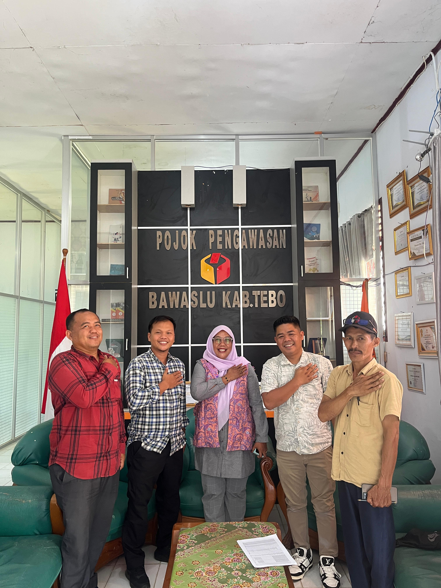
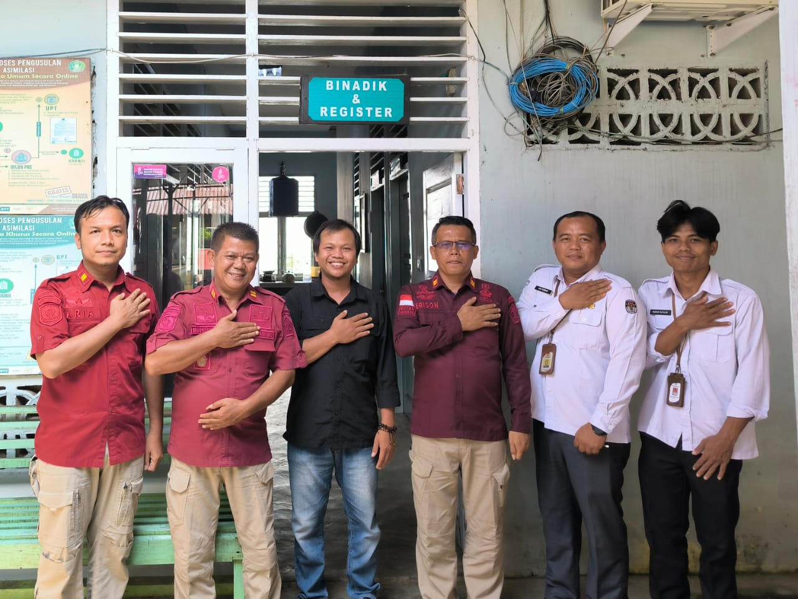
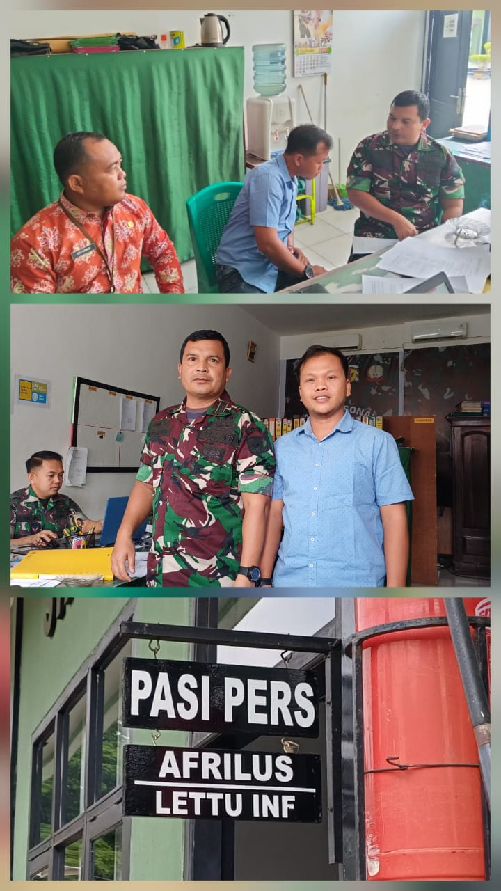
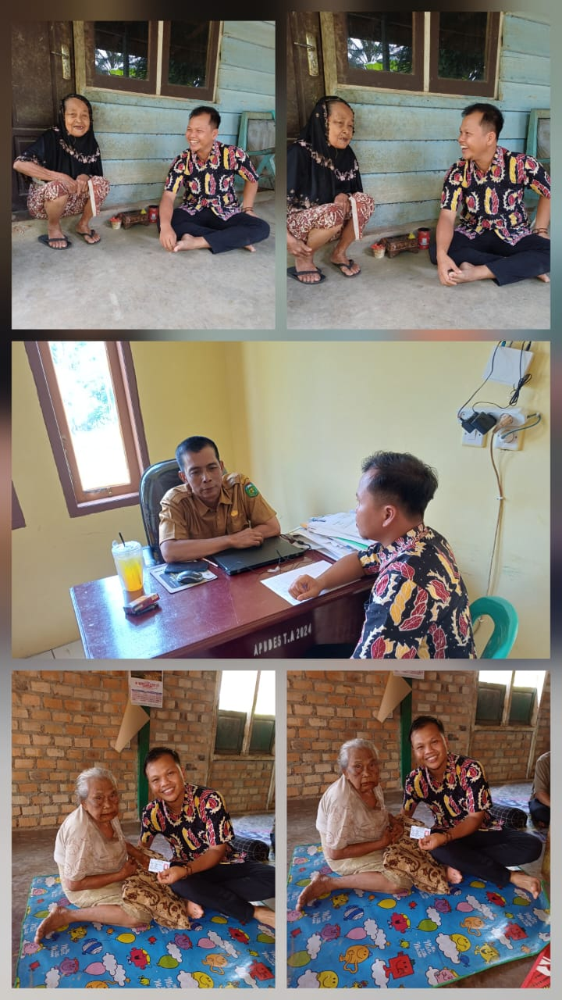

KPU TEBO Koordinasi Dengan Bawaslu
Kamis, 25 September 2025, KPU Kabupaten Tebo berkunjung ke Bawaslu Kabupaten Tebo dalam rangka koordinasi persiapan Pleno PDPB Triwulan III.
Baca Selengkapnya

KPU TEBO Kordinasi dan Silaturahmi ke Lapas Tebo
Kamis, 28 Agustus 2025, KPU Kabupaten Tebo, Ahmad Junaidi Divisi Data bersama staf berkunjung ke Lapas Kabupaten Tebo dalam rangka koordinasi dan silaturahmi.
Baca Selengkapnya

KPU TEBO KORDINASI KE KODIM 0416 BUTE TERKAIT DATA TNI
22 September 2025, Komisi Pemilihan Umum Kabupaten Tebo melaksanakan silahturahmi dan kordinasi.
Baca Selengkapnya

KPU Kabupaten Tebo Melaksanakan Coklit Terbatas (COKTAS) data pemilih yang diturunkan oleh KPU RI.
Komisi Pemilihan Umum Kabupaten tebo langsung tancap gas untuk melaksanakan Pemutakhiran Data Pemilih Berkelanjutan (PDBP)paska tahapan pemilu yang telah dilaksanakan.
Baca Selengkapnya